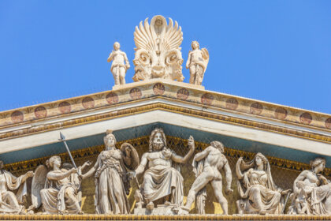
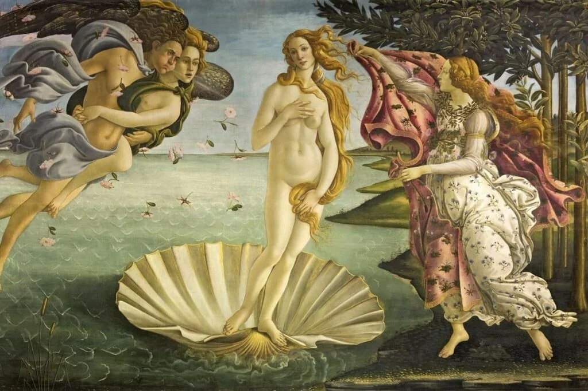

¿Que es la mitologia?

La mitología es un conjunto organizado de mitos y relatos de una religión o una cultura. Cada mitología constituye una visión particular del mundo, es decir, refleja la manera en que una sociedad entiende la existencia humana, el universo y los valores que deben regir la conducta.
Las mitologías están compuestas por mitos, que son relatos de tipo sagrado a través de los cuales una cultura le confiere sentido a la existencia. A través de ellos, se construye una explicación en clave religiosa de los fenómenos naturales y culturales. Por ejemplo, son muy comunes los mitos de creación, con los que las civilizaciones antiguas y algunas religiones contemporáneas explican el origen del universo y del ser humano.
Los dioses juegan un rol central en las mitologías, como entidades creadoras, ordenadoras y, a menudo, destructoras de lo que existe. En los relatos míticos, el ser humano suele estar en una situación de continua tensión con los dioses.
Por otro lado, también suelen tener protagonismo los héroes míticos, figuras semihumanas que suelen descender de los dioses. Los héroes realizan grandes hazañas y representan los valores positivos de la humanidad, aunque a veces también encarnan ciertas debilidades o defectos que son considerados específicos de los seres humanos.
RESUMEN: El término “mitología” también se suele usar para referir al estudio y la interpretación de los mitos y relatos religiosos de distintas culturas por parte de los antropólogos y otros especialistas. Estos estudios permiten desentrañar el significado específico de los mitos de determinadas sociedades e identificar, mediante comparaciones, patrones comunes y arquetipos en las distintas mitologías conocidas, como la griega, la romana, la escandinava, la azteca y la egipcia, entre otras.